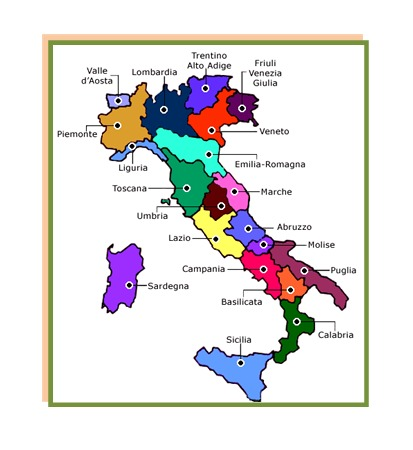
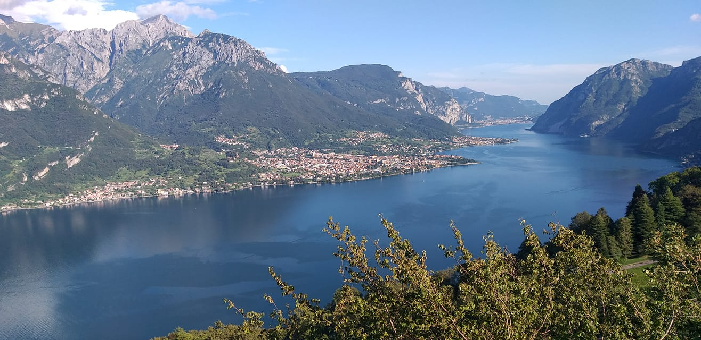
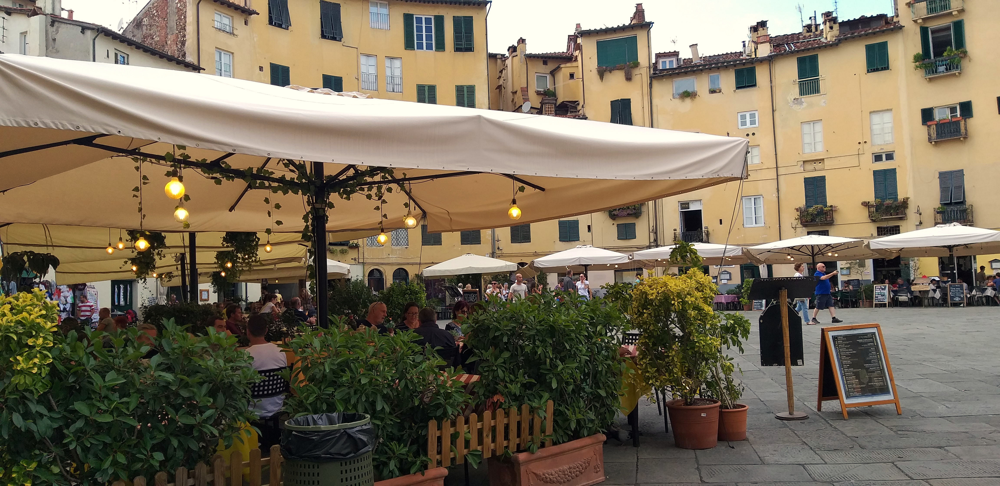

Conheça um país maravilhoso
A Itália é um país da Europa Meridional, com um clima mediterrâneo e um relevo montanhoso. É um dos países mais visitados do mundo, com uma rica história e muitas obras de arte.
Ler mais Descubra a magia
Descubra a magia
A Itália é um país da Europa Meridional, com um clima mediterrâneo e um relevo montanhoso. É um dos países mais visitados do mundo, com uma rica história e muitas obras de arte.
Ler mais
A Itália tem 302.073 km² de extensão territorial. O país é dividido em 20 regiões e 95 províncias. A Itália tem três vulcões ativos: Vesúvio, Etna e Stromboli.
Ler mais
A Itália é um país com uma cultura rica e um legado vivo. A Itália é um dos países que mais reúne patrimônios da UNESCO. A Itália tem algumas das obras artísticas mais importantes do mundo. A Itália é conhecida por seus monumentos, como o Coliseu de Roma e a Torre de Pisa.
Ler mais
A Itália é um dos países mais velhos do mundo. A capital da Itália, Roma, foi a capital do antigo Império Romano, A Ponte Vecchio, em Florença, é uma ponte medieval que sobreviveu à Segunda Guerra Mundial . Sunt.
Ler mais
A gastronomia italiana é mediterrânea, com muitos frutos do mar, legumes, temperos e azeite de oliva. É uma das mais famosas do mundo e é conhecida pela sua diversidade regional.
Ler mais
Festivais de música, Festivais de comida e bebida, Festas específicas e Eventos gastronômicos marcam o turismo e entretenimento italiano.
Ler maisO turismo é a principal atividade econômica do país. A Itália tem muitos patrimônios da humanidade reconhecidos pela Unesco. A hotelaria, alimentação, transporte e infraestrutura estão fortemente relacionadas ao turismo.
Ler mais
A Itália é referência no setor automobilístico, que responde por parte significativa das exportações. A produção de vestimentas e calçados impulsiona a economia italiana. A produção química e siderúrgica também merecem destaque. O norte da Itália é rico, devido à presença de cidades industriais altamente dinâmicas, como Milão, a capital financeira da Itália.
Ler mais
A produção agrícola se concentra no sul do país. A diversidade climática permite o cultivo de uma ampla variedade de frutas e vegetais. A Itália é o principal exportador mundial de massas, tomate em lata, maçãs frescas, embutidos, café torrado, suco de uva, vinagre, vermouth, castanhas. A Itália é o único exportador de queijos tipicos, entre os quais Parmegiano Reggiano, Grana Padano, Gorgonzola, Pecorino
Ler mais
A pizza margherita é a pizza mais famosa da Itália e uma das mais pedidas no mundo. Massa, molho de tomate, muçarela de búfala ou fiordilatte, e manjericão As cores da pizza margherita combinam com as da bandeira da Itália A primeira pizza margherita foi feita em 1889 pelo pizzaiolo Raffaele Esposito para a rainha Margherita do Savoia e seu marido Umberto I A pizza margherita é um ícone da Itália.
Ler mais
O Aperol é um aperitivo tradicional italiano, que é consumido em celebrações e encontros sociais. O Aperol Spritz é um drink que combina Aperol, Prosecco e água gaseificada, e é uma tradição típica dos aperitivos italiano.
Ler mais
O gelato é um produto artesanal italiano, feito com ingredientes frescos e sem aditivos químicos. A palavra "gelato" vem do latim gelatus, que significa "congelado". Para reconhecer um gelato de qualidade, deve-se verificar a sua consistência, que deve ser cremosa, fresca e leve. Se o gelato parecer muito líquido ou oleoso, pode indicar que há muita gordura.
Ler mais
Bellagio é uma comuna italiana na região da Lombardia ao norte da Itália, famosa por sua localização no Lago de Como que é terceiro maior lago da Itália. É conhecida como "a pérola do Lago de Como". Tem atrações como ruas de paralelepípedos, becos medievais,lojas autênticas de doces e sorvetes, vilas italianas, jardins perfumados, restaurantes com pratos típicos da gastronomia italiana. História: antigo vilarejo de pescadores, o nome significa "belo lago, É atração turística desde o século XIX.
Ler mais
Roma é a capital da Itália, localizada na região do Lácio, no oeste do país. É uma cidade com uma rica história, cultura e gastronomia, que atrai milhões de visitantes todos os anos. A tradição diz que Roma foi fundada em 753 a.C. por Rômulo e Remo, gêmeos abandonados no Rio Tibre. A cidade foi construída por uma mistura de povos que habitaram a região da península itálica: gregos, etruscos e italiotas. A República Romana enfrentou uma grave crise a partir do século II a.C., que resultou em guerras civis e na coroação de Otávio como imperador romano em 27 a.C.
Ler mais
A pequena cidade de Lucca está localizada em umas das regiões mais lindas da Itália. Na região da Toscana, conhecida como um dos principais destinos do país, causando suspiros em seus visitantes, com cenários indescritíveis. Lucca é uma cidade fundada pelos etruscos, conhecida por ter mais de 100 igrejas. A pequena cidade medieval, escondida entre largas muralhas, também é famosa pelos seus cenários bucólicos e pelas ruas de pedras que parecem ter saído de um filme.
Ler mais